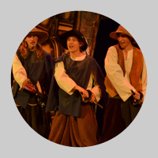
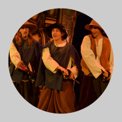

Daniel Hrbek, Jiøí Jankù podle Alexandra Dumase
Neuvìøitelná divadelní parafráze jednoho z nejslavnìjších románù svìtové literatury. Klasika, která se splašila døíve než D´Artagnanùv kùò a kterou už nikdo nezkrotí. Romantický pøíbìh, který se dostal do nesprávných rukou. Do rukou svých vlastních hrdinù! Pány Athose, Porthose, Aramise a D´Artagnana není tøeba blíže pøedstavovat. Známe je všichni ze slavného literárního díla. A v tom to právì je. Co když se Dumas spletl, co když nìkteré vìci správnì nepochopil!? Pojïme se na celou kauzu podívat ještì jednou a bez rùžových brýlí! Hudební komedie s konverzací a romantikou.
Hraje Ty-já-tr/NAÈERNO.
{kind=link}
 

{kind=link}
{kind=link}
{kind=link}
{kind=link}
{kind=link}
{kind=link}
{kind=link}
{kind=link}
{kind=link}
{kind=link}
Podle románu Alexandra Dumase Text: Daniel Hrbek, Jiøí Jankù
Hudba: Tomáš Koøének
Režie: Ludìk Horký
Herecká spolupráce: Denisa Nová
Hudební nastudování: Matìj Trojan a Kryštof Mende
Choreografie: Martin Písaøík
Klavír: Kryštof Mende
Scéna a kostýmy: Jakub Baran
Program a plakát: Mirka Hrdinová
Produkce: Kristýna Holeèková
Svìtla pod vedením Denisy Nesvaèilové
Foto z inscenace: Markéta Jurná, Marie Krbová
Dìkujeme za ochotu a pomoc Tomáši Koøénkovi a Dominiku Renèovi
Osoby a obsazení
Otec D´Artagnana: Vojtìch Chalupa
D´Artagnan: Tomáš Kyselka
Fantina: Eliška Holzknechtová
Kùò: Vojtìch Klinger / Oliver Cox
Rochefort: Jakub Heømánek
Boursin: Michal Škoda
Mylady: Veronika Lapková
Hospodský: Jan Øehoøka / Pavel Trnka / Luboš Pøívozník
Prùvodce: Vojtìch Klinger / Oliver Cox
Královna francouzská Anna Rakouská: Veronika Bártová / Lenka Rudová
Kardinál Richelieu: Jan Øehoøka / Pavel Trnka
Pan de Tréville: Vojtìch Chalupa
Athos: Matìj Trojan
Porthos: Vojtìch Koutek
Aramis: Martin Holzknecht
Camembert: Jan Øehoøka / Pavel Trnka / Luboš Pøívozník
Žervé: Vojtìch Chalupa
Fromage: Jakub Hudec
Julián: Vojtìch Chalupa
Madlén: Kateøina Chadimová / Lucie Špitálská
Král Ludvík XIII.: Vojtìch Klinger / Oliver Cox
Anglièanka: Veronika Bártová / Lenka Rudová
Anglièan: Michal Škoda
Herec: Kryštof Mende
Lord Buckingham: Vojtìch Klinger / Oliver Cox
Komorník Lane: Jan Øehoøka / Pavel Trnka / Luboš Pøívozník
Betty: Eliška Holzknechtová
Mary: Kateøina Chadimová / Lucie Špitálská
Didi: Veronika Lapková
Kitty: Eliška Holzknechtová
Sluha: Jan Øehoøka / Pavel Trnka / Luboš Pøívozník
… a dále lid, prostitutky a jeptišky v podání výše uvedených.
Premiéry: 15. a 16. dubna 2011 v rámci 22. sezóny Dìtského dramatického souboru Ty-já-tr
Dìtský dramatický soubor Ty-já-tr (umìlecký šéf Radka Tesárková)
Zøizovatel souboru: DDM Praha 7 (øeditel Jiøí Svoboda)
Divadlo RADAR, ulice Pplk. Sochora 9, Praha 7
Objednávky, rezervace vstupenek a informace: Ludìk Horký (tel. 732 547 461)